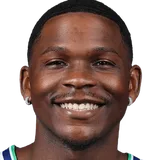

Troy Brown
2018-19 to 2023-24 · Career Map
 Washington Wizards,
Washington Wizards,  Chicago Bulls,
Chicago Bulls,  Los Angeles Lakers,
Los Angeles Lakers,  Minnesota Timberwolves,
Minnesota Timberwolves,  Detroit Pistons
Detroit Pistons
His best final NBA finish was #3 of 30, with the 2023-24 Minnesota Timberwolves. In his 356 games for 5 teams over 6 seasons they went 161–195 (45.2%), −34 games under .500, with an average final finish of 13.8.
Final NBA finish, season by season
Title Finals Other playoffs Missed. #1 = champion; the dashed line is last place that season. Each point opens that season's final standings.
All 30 teams ranked in 2023-24, his best finish (#3)Teammate help
 Bradley Beal4.02 seasons
Bradley Beal4.02 seasons- DeMar DeRozan4.01 season

Anthony Edwards4.01 season
Career
Regular seasons 1946-47 to 2026-27, games through Nov. 17, 2026. Records include 2026-27 to date; season counts and finishes use completed seasons. Each card opens its board. How we count.
Latest completed seasons
- 2023-24
 Minnesota Timberwolves: #3 of 30, 56–26 · Lost conf finals 1–4
Minnesota Timberwolves: #3 of 30, 56–26 · Lost conf finals 1–4  DAL
DAL - 2022-23
 Los Angeles Lakers: #4 of 30, 43–39 · Lost conf finals 0–4
Los Angeles Lakers: #4 of 30, 43–39 · Lost conf finals 0–4  DEN
DEN - 2021-22
 Chicago Bulls: #12 of 30, 46–36 · Lost 1st round 1–4
Chicago Bulls: #12 of 30, 46–36 · Lost 1st round 1–4  MIL
MIL
Season by season
Newest first; every header sorts. Final NBA finish is the team's rank among all teams that season (#1 = champion) and opens that season's standings. "Without him" uses the team-season window; the span line counts only the games between his first and last game for the team.
| 2023-24 | #3 of 30 | 56–26 68.3% | Lost conf finals 1–4 | 37 of 82 | 28–9 75.7% | 8–7 53.3%span: 7–6, gap +21.8 | +22.3 | |
| 2023-24 | #30 of 30 | 14–68 17.1% | Missed | 22 of 82 | 2–20 9.1% | 6–5 54.5%span: 4–5, gap −35.4 | −45.5 | |
| 2022-23 | #4 of 30 | 43–39 52.4% | Lost conf finals 0–4 | 76 of 82 | 40–36 52.6% | 3–3 50.0%span: 3–1, gap −22.4 | +2.6 | |
| 2021-22 | #12 of 30 | 46–36 56.1% | Lost 1st round 1–4 | 66 of 82 | 37–29 56.1% | 9–7 56.2%span: 9–7, gap −0.2 | −0.2 | |
| 2020-21 | #16 of 30 | 34–38 47.2% | Lost 1st round 1–4 | 21 of 72 | 5–16 23.8% | 10–12 45.5%span: 10–11, gap −23.8 | −21.6 | |
| 2020-21 | #21 of 30 | 31–41 43.1% | Missed | 13 of 72 | 5–8 38.5% | 7–10 41.2%span: 0–1, gap +38.5 | −2.7 | |
| 2019-20 | #23 of 30 | 25–47 34.7% | Missed | 69 of 72 | 24–45 34.8% | 1–2 33.3%span: N/A, gap N/A | +1.4 | |
| 2018-19 | #25 of 30 | 32–50 39.0% | Missed | 52 of 82 | 20–32 38.5% | 12–18 40.0%span: 11–16, gap −2.3 | −1.5 |
On/off, starts and close games
From the lineup data, 1996-97 on. On/off is net points per 100 possessions with him on the floor minus off, a different unit from the win-rate gaps. Started and off the bench are team records in those games; close games are those within 5 points in the last 5 minutes with him on the floor.
| 2023-24 | −10.7 | 2–1 66.7% | 26–8 76.5% | 3–0 100.0% | |
| 2023-24 | −2.7 | 2–10 16.7% | 0–10 0.0% | 0–2 0.0% | |
| 2022-23 | −2.0 | 23–22 51.1% | 17–14 54.8% | 12–8 60.0% | |
| 2021-22 | −1.0 | 4–3 57.1% | 33–26 55.9% | 6–1 85.7% | |
| 2020-21 | +1.7 | N/A | 5–16 23.8% | 1–2 33.3% | |
| 2020-21 | +26.5 | N/A | 5–8 38.5% | 1–3 25.0% | |
| 2019-20 | −2.3 | 6–16 27.3% | 18–29 38.3% | 8–12 40.0% | |
| 2018-19 | +3.8 | 2–8 20.0% | 18–24 42.9% | 1–8 11.1% |
Teammate help by season
Help = Teammates Score points for honors won that season by teammates who shared a game with him. How help works.
- 2023-24Minnesota Timberwolves
Anthony Edwards All-NBA 2ndAll-Star34 g
 Rudy Gobert DPOYAll-Def 1st36 g
Rudy Gobert DPOYAll-Def 1st36 g Karl-Anthony Towns All-Star36 g
Karl-Anthony Towns All-Star36 g Naz Reid Sixth Man37 g
Naz Reid Sixth Man37 g Jaden McDaniels All-Def 2nd27 g
Jaden McDaniels All-Def 2nd27 g
Entering help and the other teammates
Entering the season: 1.0
No honors that season: Kyle Anderson 37 g, Nickeil Alexander-Walker 37 g, Mike Conley 35 g, Shake Milton 31 g, Jordan McLaughlin 19 g, Josh Minott 14 g, Wendell Moore 11 g, Luka Garza 8 g, Leonard Miller 5 g, Daishen Nix 5 g
- 2023-24
 Detroit Pistons
No honored teammate
Detroit Pistons
No honored teammate
Entering help and the other teammates
Entering the season: 0.2 · from Jaden Ivey (0.1), Jalen Duren (0.1)
No honors that season: James Wiseman 22 g, Jaden Ivey 21 g, Evan Fournier 20 g, Marcus Sasser 19 g, Malachi Flynn 19 g, Jalen Duren 16 g, Chimezie Metu 14 g, Cade Cunningham 12 g, Tosan Evbuomwan 11 g, Jared Rhoden 11 g, Buddy Boeheim 10 g, Ausar Thompson 7 g, Simone Fontecchio 7 g, Taj Gibson 4 g and 6 more
- 2022-23Los Angeles Lakers
 LeBron James All-NBA 3rdAll-Star50 g
LeBron James All-NBA 3rdAll-Star50 g
Entering help and the other teammates
Entering the season: 3.0
No honors that season: Wenyen Gabriel 63 g, Dennis Schroeder 62 g, Austin Reaves 61 g, Lonnie Walker 54 g, Anthony Davis 53 g, Russell Westbrook 46 g, Patrick Beverley 39 g, Thomas Bryant 37 g, Max Christie 36 g, Kendrick Nunn 33 g, Rui Hachimura 33 g, Jarred Vanderbilt 26 g, Malik Beasley 26 g, Juan Toscano-Anderson 24 g and 8 more
- 2021-22Chicago Bulls
DeMar DeRozan All-NBA 2ndAll-Star60 g
 Zach LaVine All-Star53 g
Zach LaVine All-Star53 g Ayo Dosunmu All-Rookie 2nd63 g
Ayo Dosunmu All-Rookie 2nd63 g
Entering help and the other teammates
Entering the season: 2.1 · from Nikola Vucevic (1.0), Patrick Williams (0.1)
No honors that season: Nikola Vucevic 60 g, Javonte Green 49 g, Coby White 48 g, Tony Bradley 46 g, Matt Thomas 40 g, Derrick Jones 40 g, Alex Caruso 25 g, Lonzo Ball 24 g, Tristan Thompson 18 g, Tyler Cook 18 g, Malcolm Hill 16 g, Alfonzo McKinnie 15 g, Alize Johnson 14 g, Patrick Williams 13 g and 4 more
- 2020-21
 Washington Wizards
Bradley Beal All-NBA 3rdAll-Star18 g
Washington Wizards
Bradley Beal All-NBA 3rdAll-Star18 g
Entering help and the other teammates
Entering the season: 3.1 · from Russell Westbrook (3.0), Rui Hachimura (0.1)
No honors that season: Robin Lopez 21 g, Deni Avdija 21 g, Raul Neto 19 g, Davis Bertans 18 g, Russell Westbrook 17 g, Garrison Mathews 17 g, Rui Hachimura 17 g, Isaac Bonga 15 g, Moritz Wagner 14 g, Alex Len 12 g, Ishmael Smith 12 g, Anthony Gill 7 g, Jerome Robinson 7 g, Thomas Bryant 7 g and 2 more
- 2020-21Chicago Bulls
 Nikola Vucevic All-Star13 gZach LaVine All-Star9 g
Nikola Vucevic All-Star13 gZach LaVine All-Star9 g Patrick Williams All-Rookie 2nd13 g
Patrick Williams All-Rookie 2nd13 g
Entering help and the other teammates
Entering the season: 0.1 · from Coby White (0.1)
No honors that season: Thaddeus Young 13 g, Lauri Markkanen 13 g, Tomas Satoransky 12 g, Daniel Theis 11 g, Coby White 10 g, Denzel Valentine 10 g, Garrett Temple 6 g, Ryan Arcidiacono 6 g, Javonte Green 4 g, Cristiano Felicio 4 g, Devon Dotson 3 g, Al-Farouq Aminu 2 g
- 2019-20Washington Wizards
 Rui Hachimura All-Rookie 2nd45 g
Rui Hachimura All-Rookie 2nd45 g
Entering help and the other teammates
Entering the season: 1.0 · from Bradley Beal (1.0)
No honors that season: Ishmael Smith 65 g, Isaac Bonga 63 g, Bradley Beal 54 g, Davis Bertans 51 g, Thomas Bryant 43 g, Moritz Wagner 42 g, Isaiah Thomas 39 g, Ian Mahinmi 38 g, Admiral Schofield 30 g, Gary Payton II 29 g, Jordan McRae 28 g, Anzejs Pasecniks 27 g, Jerome Robinson 21 g, Shabazz Napier 20 g and 7 more
- 2018-19Washington Wizards
Bradley Beal All-Star52 g
Entering help and the other teammates
Entering the season: 2.0 · from John Wall (1.0)
No honors that season: Tomas Satoransky 52 g, Thomas Bryant 50 g, Jeff Green 47 g, Chasson Randle 36 g, Trevor Ariza 30 g, Sam Dekker 26 g, Bobby Portis 23 g, Otto Porter 22 g, Jabari Parker 20 g, Jordan McRae 20 g, Ian Mahinmi 18 g, Markieff Morris 16 g, John Wall 15 g, Austin Rivers 12 g and 9 more
Compare with a peer
 Troy Brown vs Christian WoodCareers centered on 2021-22 and 2020-21; help 3.7 and 3.8 points per season; own honors 0.0 and 0.0 per season; 356 and 339 games.
Troy Brown vs Christian WoodCareers centered on 2021-22 and 2020-21; help 3.7 and 3.8 points per season; own honors 0.0 and 0.0 per season; 356 and 339 games. Troy Brown vs Jarred VanderbiltCareers centered on 2021-22 and 2022-23; help 3.7 and 3.3 points per season; own honors 0.0 and 0.0 per season; 356 and 374 games.
Troy Brown vs Jarred VanderbiltCareers centered on 2021-22 and 2022-23; help 3.7 and 3.3 points per season; own honors 0.0 and 0.0 per season; 356 and 374 games. Troy Brown vs Isaac OkoroCareers centered on 2021-22 and 2022-23; help 3.7 and 3.7 points per season; own honors 0.0 and 0.0 per season; 356 and 397 games.
Troy Brown vs Isaac OkoroCareers centered on 2021-22 and 2022-23; help 3.7 and 3.7 points per season; own honors 0.0 and 0.0 per season; 356 and 397 games.
Record against each opponent
Regular season, completed seasons: 356 games, 161–195, against 30 franchises. Grouped by franchise (named as today); game lists keep each team's name that season.
| Games list | |||||||
|---|---|---|---|---|---|---|---|
| 17 | 7–10 | 41.2% | −3 | N/A | 2018-19 to 2023-24 | ||
| 16 | 5–11 | 31.2% | −6 | 1–0 (4–2 in games) | 2018-19 to 2023-24 | ||
| 16 | 8–8 | 50.0% | 0 | N/A | 2018-19 to 2023-24 | ||
| 15 | 7–8 | 46.7% | −1 | N/A | 2018-19 to 2023-24 | ||
| 15 | 5–10 | 33.3% | −5 | N/A | 2018-19 to 2023-24 | ||
| 15 | 3–12 | 20.0% | −9 | N/A | 2018-19 to 2023-24 | ||
| 14 | 4–10 | 28.6% | −6 | N/A | 2018-19 to 2023-24 | ||
| 14 | 8–6 | 57.1% | +2 | N/A | 2018-19 to 2023-24 | ||
| 13 | 8–5 | 61.5% | +3 | N/A | 2018-19 to 2023-24 | ||
| 13 | 11–2 | 84.6% | +9 | N/A | 2018-19 to 2023-24 | ||
| 13 | 7–6 | 53.8% | +1 | N/A | 2018-19 to 2023-24 | ||
| 12 | 8–4 | 66.7% | +4 | N/A | 2018-19 to 2023-24 | ||
| 12 | 6–6 | 50.0% | 0 | N/A | 2018-19 to 2023-24 | ||
| 12 | 6–6 | 50.0% | 0 | 1–0 (3–2 in games) | 2018-19 to 2023-24 | ||
| 12 | 5–7 | 41.7% | −2 | N/A | 2018-19 to 2023-24 | ||
| 12 | 4–8 | 33.3% | −4 | N/A | 2018-19 to 2023-24 | ||
| 12 | 7–5 | 58.3% | +2 | N/A | 2018-19 to 2023-24 | ||
| 12 | 5–7 | 41.7% | −2 | N/A | 2018-19 to 2023-24 | ||
| 12 | 5–7 | 41.7% | −2 | N/A | 2018-19 to 2023-24 | ||
| 11 | 2–9 | 18.2% | −7 | N/A | 2018-19 to 2023-24 | ||
| 11 | 5–6 | 45.5% | −1 | N/A | 2018-19 to 2022-23 | ||
| 11 | 1–10 | 9.1% | −9 | 0–1 (0–3 in games) | 2018-19 to 2022-23 | ||
| 11 | 7–4 | 63.6% | +3 | N/A | 2018-19 to 2023-24 | ||
| 10 | 7–3 | 70.0% | +4 | 0–1 (0–1 in games) | 2018-19 to 2023-24 | ||
| 9 | 1–8 | 11.1% | −7 | N/A | 2018-19 to 2023-24 | ||
| 9 | 3–6 | 33.3% | −3 | N/A | 2018-19 to 2023-24 | ||
| 8 | 3–5 | 37.5% | −2 | N/A | 2018-19 to 2023-24 | ||
| 7 | 4–3 | 57.1% | +1 | N/A | 2018-19 to 2023-24 | ||
| 7 | 4–3 | 57.1% | +1 | N/A | 2018-19 to 2023-24 | ||
| 5 | 5–0 | 100.0% | +5 | N/A | 2021-22 to 2023-24 |
Rows add up to his career record in his games. A playoff series counts when he played in it; early round-robin games show as games only. How we count.
Playoffs, with and without him
| 2022-23 | Lost conference finals to | #4 of 30 | 12 of 16 | 7–5 58.3% | 1–3 25.0% | +33.3 | |
| 2021-22 | Lost first round to | #12 of 30 | 3 of 5 | 0–3 0.0% | 1–1 50.0% | −50.0 |
Arrival and departure
Team wins per 82 games the season before he arrived vs his first season there, and his last season vs the season after he left. Per 82 so short seasons compare fairly. These are team records, not a measure of what he did.
| Left | 2024-25 | 2023-24: 56–26 56.0 per 82 | 2024-25: 49–33 49.0 per 82 | −7.0 wins | |
| Left | 2024-25 | 2023-24: 14–68 14.0 per 82 | 2024-25: 44–38 44.0 per 82 | +30.0 wins | |
| Arrived | 2023-24 | 2022-23: 42–40 42.0 per 82 | 2023-24: 56–26 56.0 per 82 | +14.0 wins | |
| Arrived | 2023-24 | 2022-23: 17–65 17.0 per 82 | 2023-24: 14–68 14.0 per 82 | −3.0 wins | |
| Left | 2023-24 | 2022-23: 43–39 43.0 per 82 | 2023-24: 47–35 47.0 per 82 | +4.0 wins | |
| Arrived | 2022-23 | 2021-22: 33–49 33.0 per 82 | 2022-23: 43–39 43.0 per 82 | +10.0 wins | |
| Left | 2022-23 | 2021-22: 46–36 46.0 per 82 | 2022-23: 40–42 40.0 per 82 | −6.0 wins | |
| Left | 2021-22 | 2020-21: 34–38 38.7 per 82 | 2021-22: 35–47 35.0 per 82 | −3.7 wins | |
| Arrived | 2020-21 | 2019-20: 22–43 27.8 per 82 | 2020-21: 31–41 35.3 per 82 | +7.6 wins | |
| Arrived | 2018-19 | 2017-18: 43–39 43.0 per 82 | 2018-19: 32–50 32.0 per 82 | −11.0 wins |
Seasons split between teams
Each team's record before his first game for it, inside his window (games with and without him) and after his last game, in the seasons he played for two or more teams.
| 2023-24 | Oct. 25, 2023 to Feb. 4, 2024 | N/A | 36–16 69.2% | 20–10 66.7% | 37 | |
| 2023-24 | Feb. 10, 2024 to April 14, 2024 | 6–43 12.2% | 8–25 24.2% | N/A | 22 | |
| 2020-21 | Dec. 23, 2020 to March 23, 2021 | N/A | 15–28 34.9% | 19–10 65.5% | 21 | |
| 2020-21 | March 27, 2021 to April 19, 2021 | 19–23 45.2% | 12–18 40.0% | N/A | 13 |
Best duos
Team record in regular-season games both played, top 10 by win %, at least 50 games together.
- DeMar DeRozan 34–26 56.7%
 Anthony Davis
30–23 56.6%
Anthony Davis
30–23 56.6% Javonte Green
30–23 56.6%
Javonte Green
30–23 56.6% Austin Reaves
34–27 55.7%
Austin Reaves
34–27 55.7%- Ayo Dosunmu
35–28 55.6%
 Dennis Schroeder
34–28 54.8%
Dennis Schroeder
34–28 54.8%- LeBron James
27–23 54.0%
 Wenyen Gabriel
34–29 54.0%
Wenyen Gabriel
34–29 54.0%- Nikola Vucevic
39–34 53.4%
- Zach LaVine
33–29 53.2%